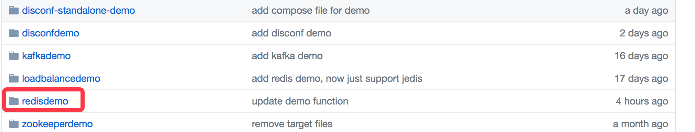
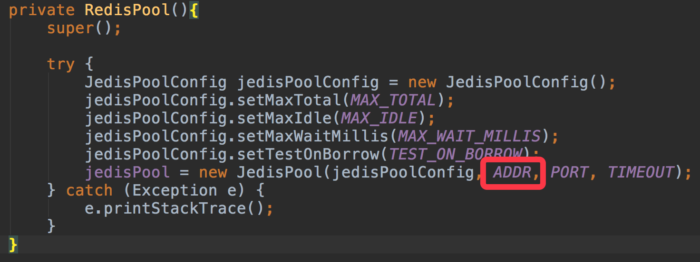
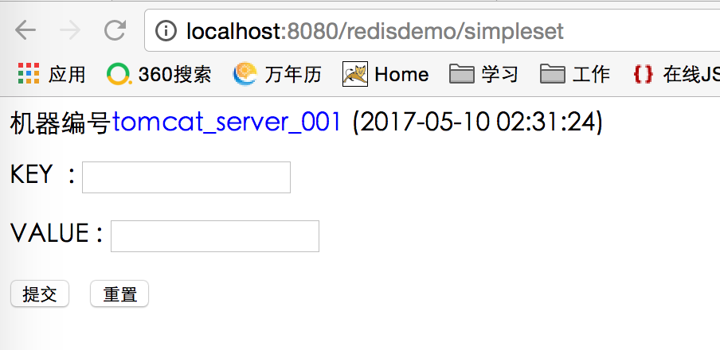

原文连接:https://www.cnblogs.com/bolingcavalry/p/11531533.html
jedis是redis的java版本的客户端实现，本文通过一些web请求&响应的实例展示了jedis的基本用法；
开始编码前我们先把环境准备好，总共两个server，对应两个docker容器：
- redis，采用redis的3.2.8版本，本次实战用的是redis单机；
- tomcat，采用7.0.77-jre8版本，由于要支持在线部署，所以tomcat镜像对官方镜像做了少量定制，详情请参照《实战docker，编写Dockerfile定制tomcat镜像，实现web应用在线部署》，这里可以不用自己动手做，在hub.docker.com下载bolingcavalry/online_deploy_tomcat:0.0.1镜像即可，为了支持在线部署，请在本地maven环境的settings.xml中的servers节点内增加一个server节点，内容如下：
<server>
<id>tomcat7</id>
<username>bolingcavalry</username>
<password>bolingcavalrypswd</password>
</server>以上只是对环境做个介绍，不需要自己动手去挨个构建，通过一个docker-compose.yml即可搭建成功，docker-compose.yml文件内容如下：
version: '2'
services:
redis001:
image: daocloud.io/library/redis:3.2.8
restart: always
tomcat001:
image: bolingcavalry/online_deploy_tomcat:0.0.1
links:
- redis001:redishost
ports:
- "8080:8080"
environment:
TOMCAT_SERVER_ID: tomcat_server_001
restart: always打开控制台，在docker-compose.yml文件所在目录下执行以下命令：
docker-compose up -d执行完毕后环境就搭建成功了，在浏览器输入"localhost:8080"可以看到熟悉的tomcat首页:
[外链图片转存中...(img-dXCPA2Gd-1568682376493)]
环境OK了，可以开始编码了，源代码的git地址是git@github.com:zq2599/blog_demos.git，里面有多个工程，本篇用到的工程是redisdemo，如下图红框所示：

这是个maven工程，首先看下maven依赖，pom中的依赖除了jedis，还要加上spring，jstl，common等常用库，如下：
<dependency>
<groupId>junit</groupId>
<artifactId>junit</artifactId>
<version>4.11</version>
<!-- 表示开发的时候引入，发布的时候不会加载此包 -->
<scope>test</scope>
</dependency>
<!-- spring核心包 -->
<dependency>
<groupId>org.springframework</groupId>
<artifactId>spring-core</artifactId>
<version>${spring.version}</version>
</dependency>
<dependency>
<groupId>org.springframework</groupId>
<artifactId>spring-web</artifactId>
<version>${spring.version}</version>
</dependency>
<dependency>
<groupId>org.springframework</groupId>
<artifactId>spring-oxm</artifactId>
<version>${spring.version}</version>
</dependency>
<dependency>
<groupId>org.springframework</groupId>
<artifactId>spring-tx</artifactId>
<version>${spring.version}</version>
</dependency>
<dependency>
<groupId>org.springframework</groupId>
<artifactId>spring-jdbc</artifactId>
<version>${spring.version}</version>
</dependency>
<dependency>
<groupId>org.springframework</groupId>
<artifactId>spring-webmvc</artifactId>
<version>${spring.version}</version>
</dependency>
<dependency>
<groupId>org.springframework</groupId>
<artifactId>spring-aop</artifactId>
<version>${spring.version}</version>
</dependency>
<dependency>
<groupId>org.springframework</groupId>
<artifactId>spring-context-support</artifactId>
<version>${spring.version}</version>
</dependency>
<dependency>
<groupId>org.springframework</groupId>
<artifactId>spring-test</artifactId>
<version>${spring.version}</version>
</dependency>
<!-- 导入java ee jar 包 -->
<dependency>
<groupId>javax</groupId>
<artifactId>javaee-api</artifactId>
<version>7.0</version>
</dependency>
<!-- JSTL标签类 -->
<dependency>
<groupId>jstl</groupId>
<artifactId>jstl</artifactId>
<version>1.2</version>
</dependency>
<!-- 映入JSON -->
<dependency>
<groupId>org.codehaus.jackson</groupId>
<artifactId>jackson-mapper-asl</artifactId>
<version>1.9.13</version>
</dependency>
<!-- 上传组件包 -->
<dependency>
<groupId>commons-fileupload</groupId>
<artifactId>commons-fileupload</artifactId>
<version>1.3.1</version>
</dependency>
<dependency>
<groupId>commons-io</groupId>
<artifactId>commons-io</artifactId>
<version>2.4</version>
</dependency>
<dependency>
<groupId>commons-codec</groupId>
<artifactId>commons-codec</artifactId>
<version>1.9</version>
</dependency>
<!-- redis -->
<dependency>
<groupId>redis.clients</groupId>
<artifactId>jedis</artifactId>
<version>2.9.0</version>
</dependency>然后是web.xml中的配置，包括spring mvc配置和扩展配置文件(spring-extends.xml)：
<!-- Spring的配置文件 -->
<context-param>
<param-name>contextConfigLocation</param-name>
<param-value>classpath:spring-extends.xml</param-value>
</context-param>
<!-- 编码过滤器 -->
<filter>
<filter-name>encodingFilter</filter-name>
<filter-class>org.springframework.web.filter.CharacterEncodingFilter</filter-class>
<async-supported>true</async-supported>
<init-param>
<param-name>encoding</param-name>
<param-value>UTF-8</param-value>
</init-param>
</filter>
<filter-mapping>
<filter-name>encodingFilter</filter-name>
<url-pattern>/*</url-pattern>
</filter-mapping>
<!-- Spring监听器 -->
<listener>
<listener-class>org.springframework.web.context.ContextLoaderListener</listener-class>
</listener>
<!-- 防止Spring内存溢出监听器 -->
<listener>
<listener-class>org.springframework.web.util.IntrospectorCleanupListener</listener-class>
</listener>
<!-- Spring MVC servlet -->
<servlet>
<servlet-name>SpringMVC</servlet-name>
<servlet-class>org.springframework.web.servlet.DispatcherServlet</servlet-class>
<init-param>
<param-name>contextConfigLocation</param-name>
<param-value>classpath:spring-mvc.xml</param-value>
</init-param>
<load-on-startup>1</load-on-startup>
<async-supported>true</async-supported>
</servlet>
<servlet-mapping>
<servlet-name>SpringMVC</servlet-name>
<url-pattern>/</url-pattern>
</servlet-mapping>接下来就是java编码了，由于web请求是多线程并发进行的，多个线程会同时使用redis服务，所以我们使用jedis的连接池JedisPool来为并发请求同时提供jedis服务的实例；
连接池一个就够了，所以这里创建了一个单例的类RedisPool，它的功能如下：
实例化一个Jedis资源池对象，也就是JedisPool；
为业务线程提供获取Jedis和归还Jedis的服务；
接下来我们看一下RedisPool的关键代码，包括实例化，JedisPool创建，获取Jedis，归还Jedis四个部分：
RedisPool的实例化：
public static RedisPool getInstance(){
if(null==instance) {
synchronized (RedisPool.class){
if(null==instance){
instance = new RedisPool();
}
}
}
return instance;
}下面时资源池的初始化代码，注意红框部分的ADDR参数是redis服务器的ip，本例中要连接的是docker 容器，所以ADDR的值用的是"redishost"，这个和tomcat容器启动时的link参数中的redis容器的别名一致：

下面是getJedis方法，从资源池取出一个Jedis实例给业务线程，由于jedisPool.getResource方法是线程安全的，所以getJedis()可以被多个线程同时调用，不用锁操作：
public Jedis getJedis(){
try {
if(null!=jedisPool){
Jedis jedis = jedisPool.getResource();
return jedis;
}else{
return null;
}
} catch (Exception e) {
e.printStackTrace();
return null;
}
}下面是业务线程用完Jedis实例后，归还给资源池时调用的方法，注意，本次使用的jedis是2.9.0版本，所以继续使用jedisPool.returnResource，jedis3.0版本之后就要用新的方法来归还到资源池了：
public void returnResource(final Jedis jedis){
if(jedis!=null){
//jedis.close()取代jedisPool.returnResource(jedis)方法将3.0版本开始
jedisPool.returnResource(jedis);
}
}写完了RedisPool，就解决了Jedis的来源问题，接下来我们看下如何使用Jedis：
本文只是入门学习，所以只展示了部分Jedis服务，通过RedisService接口对外提供，API如下：
/**
* string操作，常规设置key－value
* @param key
* @param value
*/
void strSet(String key, String value);
/**
* string操作，常规通过key获取value
* @param key
* @return
*/
String setGet(String key);
/**
* list操作，尾部追加数据
* @param key
* @param value
*/
void listAppend(String key, String value);
/**
* list操作，获取说有数据
*/
List<String> listGetAll(String key);
/**
* 指定键值在redis中是否存在
* @param key
* @return
*/
boolean exists(String key);具体的实现在RedisServiceImpl中，我们挑几个看看：
@Override
public void strSet(String key, String value) {
Jedis jedis = borrowJedis();
if(null!=jedis){
jedis.set(key, value);
}
returnJedis(jedis);
}
@Override
public String setGet(String key) {
Jedis jedis = borrowJedis();
if(null!=jedis){
String value = jedis.get(key);
returnJedis(jedis);
return value;
}
return null;
}
@Override
public void listAppend(String key, String value) {
Jedis jedis = borrowJedis();
if(null!=jedis){
jedis.rpush(key, value);
returnJedis(jedis);
}
}
@Override
public List<String> listGetAll(String key) {
List<String> list = null;
Jedis jedis = borrowJedis();
if(null!=jedis){
list = jedis.lrange(key, 0, -1);
returnJedis(jedis);
}
return null==list ? new ArrayList() : list;
}可以发现，Jedis提供的api与redis客户端上的命令是很像的，例如jedis.get，jedis.lrange等等，基本上会操作命令行就能找到对应的api了。
再看看上次的对RedisService的调用场景，本例中用的是spring mvc，所以我们先看下RedisController:
下面四个方法代表了四个url入口：
@RequestMapping("/simpleset")
public String simpleset(HttpServletRequest request, Model model) {
addCommon(model);
return "simple_set";
}
@RequestMapping("/simpleget")
public String simpleget(HttpServletRequest request, Model model) {
addCommon(model);
return "simple_get";
}
@RequestMapping("/listappend")
public String listappend(HttpServletRequest request, Model model) {
addCommon(model);
return "list_append";
}
@RequestMapping("/listgetall")
public String listgetall(HttpServletRequest request, Model model) {
addCommon(model);
return "list_get_all";
}以第一个simpleset为例，在浏览器中输入http://localhost:8080/redisdemo/simpleset，对应的simpleset方法会被调用，打开simple_get.jsp，如下图：

输入了key，value，点击提交后，由于form中指定了提交地址是strget，所以RedisController的get方法会被调用：
@RequestMapping("/strget")
public String get(HttpServletRequest request, Model model) {
String key = request.getParameter("key");
String rlt;
//判断key在redis中是否存在
if(redisService.exists(key)){
rlt = "simple_get_success";
String value = redisService.setGet(key);
model.addAttribute("value", value);
}else{
rlt = "check";
model.addAttribute("exists", "不存在");
}
model.addAttribute("key", key);
addCommon(model);
return rlt;
}key如果存在，就取出数据，并跳转到simple_get_success.jsp页面，否则跳转到check.jsp页面，分别展示不同的内容。
以上就是jedis基本用法的简介，详情请见redisdemo源码。
另外，部署工程的时候，请使用命令mvn clean package -U -Dmaven.test.skip=true tomcat7:redeploy，就能将工程编译打包部署到tomcat上去。
欢迎关注我的公众号：程序员欣宸